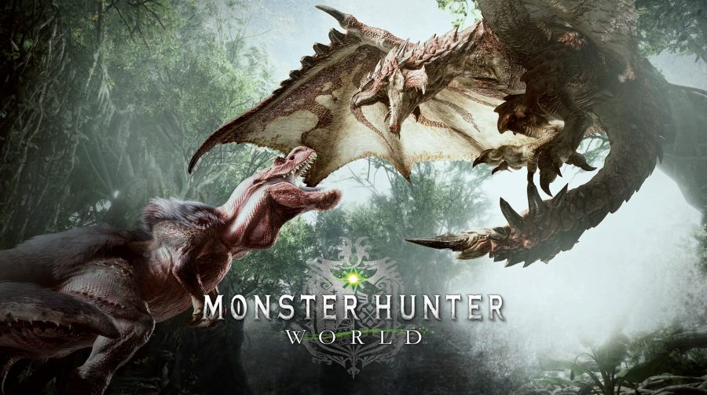
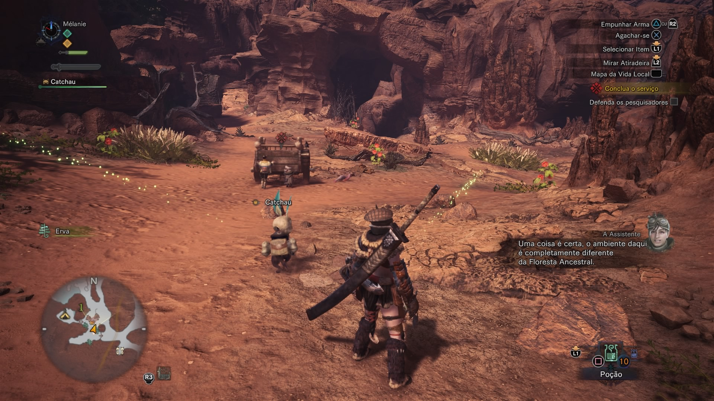
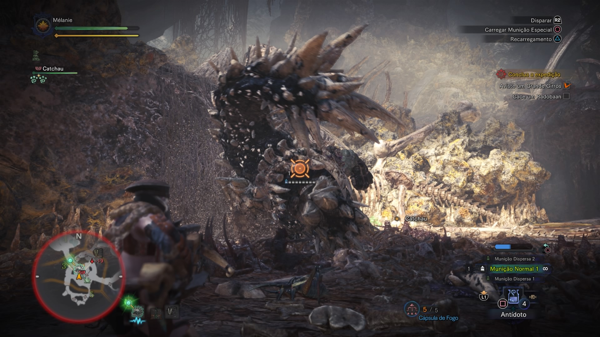
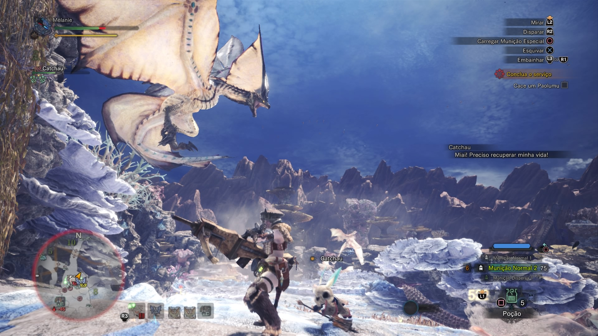

Monster Hunter World: Vale a Pena?
Monster Hunter World coloca os jogadores na pele de caçadores e exploradores de um novo mundo repleto de opções.
A presa está ali, sossegada, deitada em um sono profundo. Você toma posição, prepara seu melhor ataque e quando vai conquistar a glória, um outro monstro, muitas vezes maior, surge sem pedir licença ataca seu alvo e uma batalha feroz por terreno começa, com você ali no meio sem saber se os resultados podem ser bons ou ruins.
Monster Hunter World é um jogo grande, na verdade enorme. Ele reúne tudo que um bom título – em teoria – deveria ter: longevidade, profundidade, recursos que satisfazem aqueles que preferem voos solos, mas também oferece possibilidades para uma aventura em companhia através do co-op.
E ao mesmo tempo em que respeita o competente legado da série, moderniza muito do seu design com a oferta de opções mais sofisticadas e acessíveis. Isso não quer dizer no entanto que o jogo seja fácil. Você está diante de um game muito desafiador que exigirá dezenas de horas de dedicação, com elevadas doses de dificuldade. Não porque seja difícil, mas por suas características de MMO exigirem que você conquiste os melhores recursos para continuidade das missões.
E há aqui um ponto que pode dividir opiniões. A progressão do jogo é deveras cadenciada. Forjar bons sets exigem a repetição de caçadas. A mesma armadilha que a grande maioria dos massive multiplayer online caem. Se por um lado existe o sentimento de trabalhar em torno de algo muito desejado, o tempo excessivamente grande pode não agradar aos jogadores que preferem ir “mais direto ao ponto”.
Admirável Mundo Novo
No game, você inicia personalizando seu caçador através de um robusto sistema de criação, com diversas opções tanto para o herói, quanto para o Amigato – um companheiro felino bastante fiel – e já é lançado na concepção conceitual da trama.
Apesar de não ser o ponto forte do título, o enredo é bem construído e molda um alicerce sustentável para progressão em diversos ambientes. A premissa é simples: você faz parte de uma espécie de grupo de pesquisa que tem como objetivo entender os motivos pelos quais dragões anciões estão indo em direção a um local conhecido como Novo Mundo. Mas seu grupo é logo surpreendido pelo gigantesco Zorah Magdaros, um dragão absurdamente grande, e no começo você deve se reunir com os demais membros dissipados da Guilda.
Aos poucos a narrativa vai apresentando outros personagens e diversas situações. Monster Hunter World é um ciclo: você aceita uma missão – geralmente é uma caça de um determinado monstro – no HUB – esta pode ser enfrentada sozinho ou na companhia de outros três amigos. Você então parte na captura da fera, seguindo suas pegadas, explorando o ambiente e até que se depara com ela. Aí a luta tem início efetivo. Vencendo, a quest é concluída, itens são coletados e você retorna ao HUB, melhora seus equipamentos, aceita nova missão e assim sucessivamente.
A cada etapa o enredo vai evoluindo, novos mapas são apresentados. Pode parecer, mas não são etapas enfadonhas. Muito pelo contrário. Cada novo ambiente é riquíssimo em detalhes, com biomas únicos, animais bastante singulares, repleto de locais para exploração. É empolgante partir em uma caçada por novos ambientes e o jogo trabalha sempre para oferecer mais e mais partes inéditas.
O Visual também impressiona pela abundância de cores, detalhes refinados dos bichos, desertos, florestas e muito mais. É tudo muito rico em diversidade, um convite suculento para exploração. Em contrapartida, em momentos com muitos elementos na tela – vários grandes monstros, matas, etc – algumas quedas no framerate no PlayStation 4 padrão foram notadas. Nada que incomodasse tanto. No geral os gráficos são bem bacanas.
Tudo isso é bem embalado por uma ótima sonoplastia. Desde o rugido amedrontador dos monstros, as canções que embalam as caçadas. Elas dão o exato tom de uma jornada desafiante e robusta.
O que não se destaca tanto é dublagem. Ela não é contínua. Muitas vezes um personagem começa a dizer algumas palavras, mas os diálogo prossegue por legendas. Na verdade não é algo que atrapalhe, até facilita! O jogo está localizado em nosso idioma através das legendas em PT-BR, que por sinal estão muito bem regionalizadas. Mais um ótimo trabalho da Capcom.
O doce sabor da caçada
Apesar de – infelizmente – existirem muitas atividades de caças no mundo, a sociedade já convencionou que caçar animais só por caçar – excluindo a necessidade de reequilibrar um determinado ambiente – não é uma atividade muito legal. Mas, o que faz (ou fazia) com que exista um desejo sedento por abater uma presa? A resposta talvez não seja na conclusão, mas no decorrer de todos os processos.
Estudar um animal, conhecer seus pontos fracos, fazer preparativos, escolher as armas mais adequadas para cada situação, se juntar com outros caçadores. Tudo isso incorre em uma reunião de emoções bastante emblemáticas. E isto, Monster Hunter World oferece com muita propriedade.
O ponto alto do game é este: sair em busca do desconhecido, desbravando novos ambientes e, ao fim, capturar um fera muitas vezes mais forte. É uma baita experiência de videogames, sem dúvidas umas das melhores desta oitava geração.
Com amigos então, fica tudo mais agradável.
Mas há aqui um ponto meio que fora de contexto. Para que um amigo se junte a você, ele precisa estar na mesma parte do enredo. É curioso porque em alguns momentos você precisa entrar sozinho na caçada, assistir a alguns elementos da trama, retornar para o lobby e só então você vai conseguir partir com os demais na quest com outro personagem que esteja um pouquinho adiante.
Não é exatamente algo que atrapalhe tanto, mas é no mínimo curioso.
Já o que pode incomodar é a pouca diversidade de monstros. No princípio você vai gostar e até se impressionar com o leque de opções, mas conforme avanço percebe-se que a variedade não é tão ampla assim, deixando um pouco a desejar neste aspecto. Principalmente porque o gameplay vai se tornando um pouco exaustivo com o tempo.
Em contrapartida, o jogo auto-equilibra com as boas ofertas de opções de armas e equipamentos. Monster Hunter consegue fazer com os jogadores testem muitas opções e consiga evoluí-las até que de maneira bastante rápida. Conquistar um novo Set não significa que você tenha que traçar um novo longo caminho de evolução. Progride-se muito bem com novas armas. Isso propicia muitas e muitas configurações, até que você encontre uma opção que lhe satisfaça melhor.
Mas, mesmo que a Capcom tenha facilitado bastante as coisas em termos de acessibilidade, ainda assim o jogo exige dedicação. São dezenas de tutorais e opções novas surgem a cada instante. O que pode assustar um pouco, principalmente no início. É burocrático.
Bem vindo ao lar, bom caçador
É preciso ter muito cuidado com Monster Hunter World. Ele vicia. Ele começa lhe apresentando todo seu universo de forma despretenciosa, com uma saraivada de opções, mas aos poucos você vai se familiarizando com os menus, com as mecânicas – um pouco travadas é verdade – mas logo você se acostuma, vai tomando gosto e quando se dá conta, já não consegue mais se distanciar do game.
Escorrega um pouquinho na variedade de criaturas, em partes visuais que poderiam ser mais caprichadas e nas mecânicas, um pouco duras. Mas não chega a ofuscar o bom trabalho. “a beleza da imperfeição”.
E o fim do enredo não significa que chegou o momento de encostar o game. Muito pelo contrário, você ainda encontrará muitas e muitas coisas a serem feitas no game. O universo do título é bastante amplo. Um caçador, nunca tem descanso.
Fonte:MeuPlastation